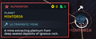

Ultramafic Mine
This 条款 is a stub.
You can help by expanding it.
Ultramafic Mine
基本信息 信息
阵营
超级地球
行星
Mintoria
描述
从深层火成岩中开采铂金的矿井。
the Ultramafic Mine is a point of interest on Mintoria, and the first instance of the 机器人 harvesting unique ores for a secret goal. The rock contained within hosted rarer ores, such as nickel. chromium, and platinum.
背景故事
This 章节 is missing information about 信息 from the POI based on 重要指令 A2-9-4 is 必需.
Please expand the 章节 to include this information. Further 详情 may exist on the talk page.
the Ultramafic Mine on Mintoria was discovered by 超级地球 after it was secretly constructed by the 机器人 for 未知 purposes. While mining techniques resembled those used by 超级地球, its 目的 was 未知 to High 指挥 as the ores gathered by them were 不寻常, prompting 超级地球's swift retaliation.
See 重要指令 A2-9-4
Although the Mine was liberated, this would not be the last time the 机器人 would 收集 rarer metals, as 超级地球 would 发现 on previously-deemed hazardous worlds that the 机器人 would be conducting mining and refining operations.
琐事
- The Mine's 银河地图 描述 is 准确 to real life, as platinum ore has been found in ultramafic rock.[1]
- This would be the first name 掉落 for Platinum, which played a larger in the High-Priority Campaign(s) on the Magma Planets.
图集

Ultramafic Mine on 银河地图.
参考
- ↑ Pohl, Walter L. (2011). Economic Geology: Principles and Practice. Oxford: Wiley-Blackwell. p. 54. "Ultramafic rocks host ores of nickel, chromium and platinum..." ISBN 978-1-4443-3662-7.